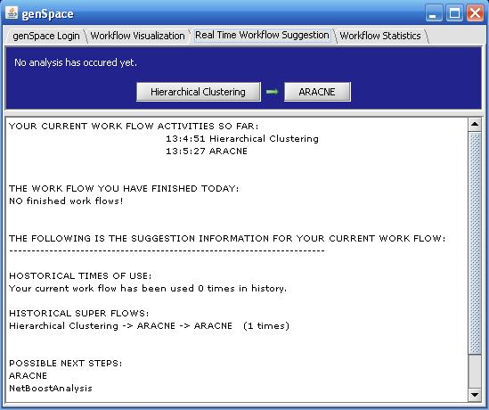
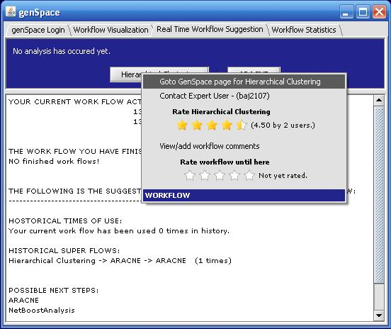

To see suggestions about your current workflow, choose "genSpace" from the geWorkbench "Tools" menu. Then choose the "Real Time Workflow Suggestion" tab.
Current Workflow
genSpace will show you the analysis tools that you have used in the current workflow,
as well as the time at which each was started.
It will also show you how many times the particular workflow has been used by
other genSpace users, and the most common "superflows" that include that workflow.
Under "possible next steps", genSpace will suggest other analysis tools that have been used
in workflows that start with the one you are currently performing.

Rating Tools and Workflows
To rate an analysis tool or the entire workflow, or to go to the genSpace wiki page for
the analysis tool or entire workflow, right-click on the analysis tool and choose the desired
action

Note that the "contact expert user" feature is currently disabled.